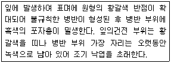
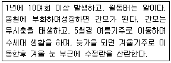
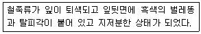

식물보호기사 (2006-09-10 기출문제)
1과목: 식물병리학
1. 식물 바이러스병징 중 세포조직의 괴사 형태가 아닌 것은?(오류 신고가 접수된 문제입니다. 반드시 정답과 해설을 확인하시기 바랍니다.)
- 괴사반점(necrotic spot)
- 둥근겹무늬(ring spot)
- 괴사줄무늬(streak)
- 위축(dwart)
(정답률: 59%)

2. 다음 중 유주자낭을 형성하는 균은?
- 오이 잿빛곰파이병균
- 고추 역병균
- 딸기 시들음병균
- 오이 흰가루병균
(정답률: 56%)
3. 벼키다리병균이 분비하여 벼가 비정상적으로 신장하는데 관계하는 생장조절제는?
- 카이네틴
- 옥신
- 에틸렌
- 지베렐린
(정답률: 96%)
4. 선충에 의한 토양전염성 바이러스는?
- Tobamovirus
- Potyvirus
- Nepovirus
- Geminivirus
(정답률: 63%)
5. 벼 도열병의 판별품종과 관계가 가장 적은 것은?
- 테텝(Tetep)
- 태백벼
- 통일벼
- 추청벼
(정답률: 52%)
6. 과수의 자주날개무늬병균은 분류학적으로 어느 균류에 속하는가?
- 난균문
- 담자균문
- 자낭균문
- 접합균문
(정답률: 74%)
7. 식물에 증생병인 혹을 형성하는 병원균은?
- Agrobacterium tumefaciens
- Rhizoctonia solani
- Clavibacter michiganesis
- Xanthomonas campestris
(정답률: 90%)
8. 식물세균에 있어서 세균 주위에 편모를 가지고 있지 않은 병원균은?
- Bacillus 속
- Pseudomonas 속
- Bacterium 속
- Xanthomonas 속
(정답률: 47%)
9. 저항성 품종을 이용한 방제방법의 가장 큰 문제점은?
- 비경제성
- 정항성 품종의 이병화 현상
- 약해 및 잔류독성
- 비효과적
(정답률: 92%)
10. 식물의 병에 대한 수평저항성의 설명으로 맞는 것은?
- 단인자 저항성이다.
- 다인자 저항성이다.
- 특정한 레이스에만 저항성이다.
- 환경변화에 대해 안정적이다.
(정답률: 68%)
11. 다음에서 설명하느 사과나무의 병은?

- 갈색무늬병
- 점무늬낙엽병
- 겹무늬병
- 탄저병
(정답률: 48%)
12. 4~5월의 강우 직후에 2~3회 디니코나졸수화제(빈나리)를 살포하면 방제 가능한 병은?
- 사과나무 검은별무늬병(잎집무늬 마름병)
- 사과나무 탄저병
- 배나무 검은무늬병
- 배나무 붉은별무늬병
(정답률: 62%)
13. 병원균이 물과 관련이 깊어 물 빠짐이 나쁜 밭이나 장마시에 발생이 많고 물을 통하여 전염하며, 모래 땅에서는 발생이 적은 병해는?
- 잿빛곰팡이병
- 균핵병
- 흰가루병
- 역병
(정답률: 59%)
14. 다음 중 병원이 경란전염(經卵傳染)하는 것은?
- 벼 오갈병
- 담배 모자이크병
- 벼 도열병
- 오이 모자이크병
(정답률: 71%)
15. 곤충에 의해 주로 전염되는 병은?
- 배나무 검은무늬병
- 맥류 오갈병
- 뽕나무 오갈병
- 벼 누른오갈병
(정답률: 84%)
16. 다음 중 벼 도열병의 병원은?
- 바이러스
- 세균
- 진균
- 파이토플라즈마
(정답률: 49%)
17. 다음 중 밤나무 줄기마름병의 전형적인 병징은?
- 천공(shot hole)
- 위조(wilting)
- 부란(canker)
- 비대(hypertrophy)
(정답률: 29%)
18. 식물병원균이 식물세포벽을 분해하는 효소가 아닌 것은?
- 기주특이적 독소(HST)
- 셀룰로오스분해효소
- 펙틴분해효소
- 규틴분해효소
(정답률: 77%)
19. 출수기 이후에 벼 도열병이 잘 발생하지 않는 주된 요인은?
- 고온다습한 기후
- 칼리질의 흡수 효과
- 잎의 모용 발달
- 잎의 규질화
(정답률: 71%)
20. 다음 중 식물 바이러스병의 진단 방법은?
- 점액의 누출여부 조사
- 혈청학적으로 진단
- 표징으로 진단
- 포자형성 유무로 진단
(정답률: 85%)
2과목: 농림해충학
21. 곤충 더듬이(antenna)의 마디중, 수컷이 암컷의 날개소리를 잘 듣도록 발달된 존스턴기관(Johnston's organ)이 있고, 비행 중 바람의 속도를 측정하는 감각기들이 집중되어 있는 마디는?
- 기본마디
- 자루마디
- 팔굽마디
- 채찍마디
(정답률: 72%)
22. 다음은 어떤 해충의 생활사인가?

- 배추순나방
- 점박이응애
- 가루깍지벌레
- 복숭아혹진딧물
(정답률: 81%)
23. 향나무하늘소(측백나무하늘소)는 어떤 충태로 월동하는가?
- 성충태
- 유충태
- 난태
- 용태(번데기)
(정답률: 47%)
24. 곤충의 소화기관 중 내배엽에서 만들어진 것은?
- 모이주머니
- 전위
- 식도
- 중장
(정답률: 78%)
25. 다음 분류군 중 곤충강에 속하지 않는 것은?
- 매미목
- 나미목
- 응애목
- 딱정벌레목
(정답률: 93%)
26. 다음은 어떤 해충에 의한 피해인가?

- 응애류
- 방패벌레류
- 나무이류
- 멸구류
(정답률: 75%)
27. 곤충다리의 마디 순서로 맞는 것은?
- 기절 → 전절 → 퇴절 → 경절 → 부절
- 기절 → 티절 → 경절 → 전절 → 부절
- 기절 → 퇴절 → 전절 → 경절 → 부절
- 기절 → 전절 → 부절 → 퇴절 → 경절
(정답률: 69%)
28. 곤충이 생활하는 도중 부적합한 환경을 극복하려고 발육을 일지 정지하는 현상은?
- 변태
- 휴면
- 이주
- 탈피
(정답률: 84%)
29. 윤작과 혼작을 통하여 방제효과를 얻기가 가장 유리한 해충은?
- 잡식성이고, 이동성이 큰 해충
- 잡식성이고, 이동성이 적은 해충
- 단식성이고, 이동성이 적은 해충
- 단식성이고, 생활사가 짧은 해충
(정답률: 65%)
30. 다음 집파리의 날개에 대한 설명으로 옮은 것은?
- 완전변태를 하는 곤충으로 2쌍의 완전한 날개를 가진다.
- 앞날개는 막상으로 잘 발달되고 뒷날개가 퇴화되어 평균기(halter)로 변형되어 있다.
- 앞날개가 퇴화되어 평균기(halter) 기능을 하고 뒷날개가 막상으로 잘 발달되어 있다.
- 불완전변태를 하는 곤충으로 앞날개가 혁질의 단단한 모양이다.
(정답률: 80%)
31. 다음 중 같은 곤충종 내의 다른 개체간 통신을 목적으로 사용되는 페로몬이 아닌 것은?
- 집합페로몬
- 방어페로몬
- 성페로몬
- 경보페로몬
(정답률: 73%)
32. 다음 중 생식형태와 해충의 연결이 틀린 것은?
- 다배생식 - 솔잎혹파리
- 단위생식 - 목화진딧물(여름형)
- 양성생식 - 배추흰나비
- 단위생식 - 벼물바구미
(정답률: 67%)
33. 농약에 대한 교차저항성(cross resistance)의 설명으로 올바른 것은?
- 한가지 약제를 사용 후 그 약제에만 저항성이 생기는 것
- 한가지 약제를 사용 후 약리작용이 비슷한 다른 약제에 저항성이 생기는 것
- 한가지 약제를 사용 후 모든 다른 약제에 저항성이 생기는 것
- 한가지 약제를 사용 후 동일 계통의 다른 약제에는 저항성이 약해지는 것
(정답률: 86%)
34. 곤충의 외표피를 바깥쪽에서부터 안쪽으로 옳게 배열한 것은?
- 시멘트층 → 왁스층 → 표피층
- 왁스층 → 진피세포 → 기저막
- 왁스층 → 원표피 → 기저막
- 왁스층 → 기저막 → 진피세포
(정답률: 73%)
35. 다음 중 농약의 부작용으로 볼 수 없는 것은?
- 자연계의 균형 파괴
- 약제저항성 해충의 출현
- 동물상의 다양화
- 잔류독성
(정답률: 90%)
36. 곤충 분류학상 딱정벌레목(目)에 속하지 않는 종은?
- 소나무좀
- 느티나무벼룩바구미
- 오리나무잎벌레
- 잣나무넓적잎벌
(정답률: 58%)
37. 다음 중 주성(走性)이란?
- 자극의 방향에 대하여 일정한 이동방향을 나타내는 행동
- 자극의 방향과 이동방향 간의 일정한 방향서이 없는 행동
- 자극의 방향과 관계없이 일정한 이동방향을 나타내는 행동
- 자극의 방향과 곤충의 장축 간에 방향성를 유지하는 행동
(정답률: 80%)
38. 솔수염하늘소는 소나무류에 큰 피해를 주는 소나무재선충의 매개충이다. 이 솔수염하늘소의 우화 최성기는?
- 3월
- 6월
- 9월
- 12월
(정답률: 76%)
39. 곤충의 발생에 영향을 주는 환경요인이 아닌 것은?
- 산란수
- 기상
- 먹이
- 생활장소
(정답률: 50%)
40. 완전변태를 하지 않는 곤충은?
- 버들잎벌레
- 복숭아명나방
- 하늘소
- 진달래방패벌레
(정답률: 67%)
3과목: 재배학원론
41. 비닐하우스에서는 흔히 고온장해가 유발되는데 내열성이 가장큰 식물체 부위는?
- 완성엽(完成葉)
- 미성엽(未成葉)
- 눈(芽)
- 중심주(中心柱)
(정답률: 67%)
42. 답전윤환의 효과로 틀린 것은?
- 지력증강
- 기지의 회피
- 병충해 증가
- 잡초의 감소
(정답률: 88%)
43. 단시일 내에 비교적 특성이 균일한 계통을 얻을 수 있는 육종법으로 일반적인 타가수정작물에 이용되는 것은?
- 파생계통육종법
- 성군집단육종법
- 여교잡법
- Ramsch 육종법
(정답률: 43%)
44. 작물의 배수성 육종시 염색체를 배가시키는데 가장 효과적으로 이용되는 약제는?
- colchicine
- auxin
- kinetin
- cycocel
(정답률: 79%)
45. 포장용수량의 pF는 약 얼마인가?
- 0
- 2.7
- 3.9
- 4.2
(정답률: 77%)
46. 작물의 침관수해에 대하여 잘못 설명한 것은?
- 물이 빠지면 잎의 흙 앙금을 씻어준다.
- 흐린 물보다 맑은 물에서 피해가 더 크다.
- 정체수는 유수부다 피해가 크다.
- 수온이 높을수록 피해가 크다.
(정답률: 87%)
47. 다음 중 호광성 종자는?
- 가지
- 오이
- 상추
- 토마토
(정답률: 72%)
48. 잡종 강세를 주로 이용하는 작물은?
- 보리
- 들깨
- 옥수수
- 벼
(정답률: 66%)
49. 다음 비료 종류 중 토양의 산성화(酸性化)와 가장 관련이 적은것은?
- 황산암모니아
- 염화칼륨
- 요소
- 황산칼륨
(정답률: 75%)
50. 토양 중에 산소가 부족하고 CO2 농도가 높을 때 가장 흡수가곤란한 성분은?
- N
- P
- K
- Ca
(정답률: 21%)
51. 우량품종의 구비조건은?
- 우수성, 내비성, 다수성
- 다수성, 양질성, 내병성
- 다수성, 광지역성, 내비성
- 우수성, 균등성, 영속성
(정답률: 80%)
52. 영양번식법 중 휘묻이에 해당되지 않는 것은?
- 선취법
- 파상취법
- 당목취법
- 고취법
(정답률: 69%)
53. 품종 육종시 육종가가 변이를 직접 만드는 방법이 아닌 것은?
- 집단육종법
- 계통분리법
- 계통육종법
- 파생계통육종법
(정답률: 61%)
54. 작물의 온도계수를 가르키는 것은?
- pH
- Q10
- pF
- Eh
(정답률: 73%)
55. 작물의 도복대책이 아닌 것은?
- 단간형 품종을 재배한다.
- 생육전기에 배토를 한다.
- 재식밀도를 높이고, 질소 비료를 증시한다.
- 규산질 비료를 시용한다.
(정답률: 69%)
56. 고랭지에서 주로 종묘를 생산하는 작물은?
- 감자
- 고구마
- 밀
- 호박
(정답률: 83%)
57. 토양 중의 유효수분범위 설명으로 가장 적합한 것은?
- 최대용수량(最大容水量)과 흡습계수(吸濕係數) 사이의 수분
- 포장용수량(圃場容水量)과 영구위조점(永久萎調点) 사이의 수분
- 포장용수량(圃場容水量)과 흡습계수(吸濕係數) 사이의 수분
- 최대용수량(最大容水量)과 초기위조점(初期萎調点) 사이의 수분
(정답률: 66%)
58. 토양입단의 효용과 가장 관계가 적은 것은?
- 수분 보유력 증대
- 비료분 보유력 증대
- 지하수의 증발억제
- 토양미생물의 불활성화
(정답률: 76%)
59. 화곡류에서 가뭄에 의한 피해가 가장 심한 생육단계는?
- 분얼기
- 수잉기
- 출수기
- 등숙기
(정답률: 62%)
60. 종자의 수명(壽命)에 가장 영향을 적게 미치는 조건은?
- 종자의 수분함량
- 저장습도(貯藏濕度)
- 저장온도
- 광선(光線)
(정답률: 73%)
4과목: 농약학
61. 다음 중 amide계 제초제는 어는 약제인가?
- Linuron
- Bentazone
- Butachlor
- Glyphosate
(정답률: 35%)
62. 리바이지드 50% 유제를 1,000배 희석하여 10a 당 180L를 살포하려 할 때 리바이지드 50%유제의 소요량은?
- 45㏄
- 90㏄
- 180㏄
- 360㏄
(정답률: 72%)
63. 만코지 등 Dithio Carbamate계 농약의 정량에 주로 사용되는 분석방법은?
- 적정법
- 중량법
- 분광 광도계법
- TLC법(Thin Layer Chromatography)
(정답률: 50%)
64. 살균제 농약의 작용기작 중 산화, 환원에 있어서 SH기가 관여하는 탈수소화 효소나 SH 기질과 작용하여 황화물을 만들어 기능을상실시켜 살균작용을 나타내는 농약이 아닌 것은?
- 캡탄 수화제
- 홀펫 수화제
- 디노 수화제
- 타로닐 수화제
(정답률: 47%)
65. 유기인계 살충제의 일반적인 특성에 대한 설명 중 옳지 않은 것은?
- 동물의 체내에서 분해가 빠르고 체내에 축적작용이 없다.
- 약제살포 후 광선이나 기타 요인에 의하여 빨리 소실되는 편이다.
- 알카리성 물질에 의하여 분해되기 쉽다.
- 인축에 대한 독성이 비교적 약한 약제가 많다.
(정답률: 57%)
66. 4두식 석회반량 보르도액은 다음 중 어느 것인가?
- 황산구리 450g 에다 생석회 225g 과 물 80L를 가지고 만든 것
- 황산구리 225g 에다 생석회 450g 과 물 80L를 가지고 만든 것
- 황산구리 450g 에다 생석회 900g 과 물 80L를 가지고 만든 것
- 황산구리 900g 에다 생석회 450g 과 물 80L를 가지고 만든 것
(정답률: 52%)
67. 저장 곡류(穀類)의 훈증제로 주로 사용되는 것은?
- DEP제
- Alphamethirin제
- Procymidone제
- Methy bromide제
(정답률: 77%)
68. 원제가 가수분해나 열에 안정한 화합물에 한하여 주로 적용하고 있는 입제의 제제 방법은?
- 압출조립법
- 흡착제
- 피복법
- 분무건법
(정답률: 71%)
69. 다음 2,4-D 산, 또는 그의 염과 에스테르 중 물에 가장 잘 녹는화합물은?
- 2,4-D 산
- 2,4-D 소다염
- 2,4-D 에스테르형
- 2,4-D 아민염
(정답률: 50%)
70. 물에 녹지 않는 주제를 카오린(kaolin), 벤토나이트(bentonite) 등의 점토광물과 계면활성, 분산제를 배합하고 혼합하여 제제화 한 것은어느 제형인가?
- 수용제
- 수화제
- 분제
- 증량제
(정답률: 73%)
71. 농약의 종류별로 포장지와 병뚜껑의 색깔을 달리하여 농민이농약을 선택할 때 쉽게 식별할 수 있도록 하고 있는데 살충제의 병뚜껑은 다음 중 어떤 색깔인가?
- 분홍색
- 초록색
- 노랑색
- 파랑색
(정답률: 75%)
72. 발아전처리(pre-emergence)제초제에 대하여 가장 잘 설명한 것은?
- 작물 발아 전 시기에 처리하는 약제이다.
- 잡초 발아 전 시기에 처리하는 약제이다.
- 작물의 생육기간 중에 살포하는 약제이다.
- 토양 및 경엽 처리가 가능한 약제이다.
(정답률: 74%)
73. 용제에 녹기 어려운 농약 주성분을 액제화한 현탁제제는?
- 수화제
- 수용제
- 유제
- 플로우어블
(정답률: 35%)
74. 유제(Emulsifiable concentrate)의 구비조건 중 옳지 않은 것은?
- 유화성이 좋아야 한다.
- 해충의 표면에 부착능력이 좋아야 한다.
- 유효성분이 보본 또는 사용 중에 분해 변화가 커야 한다.
- 물로 희석 시 유효성분이 석출되지 않아야 한다.
(정답률: 74%)
75. 고체농약을 포유동물에 경구 투여한 고독성농약의 반수치사약 량(㎎/㎏)은?
- 5미만
- 5이상 50미만
- 50이상 500미만
- 500이상
(정답률: 60%)
76. NOEL(No Observed Effect Level)이란?
- 일일섭취허용량
- 식품 중 잔류농약의 허용기준
- 농약이 잔류할 우려가 있는 식품 중의 잔류평균
- 일생동안 매일 섭취하여도 아무런 영향을 주지 않는 약량
(정답률: 82%)
77. 유기인제에 중독 되었을 때에 주로 사용되는 해독제는?
- 치옥탄
- 팜
- 쿠렙톤
- 비타민케이
(정답률: 78%)
78. 우리나라에서 현재 콩나물에 사용되는 농약은?
- 인돌비액제
- 지베레린수용제
- 에세폰액제
- 루톤분제
(정답률: 72%)
79. 다음 중 농약의 혼합사용이 가능한 것은?
- 석회유황합제+피레스린
- 보르도액+유기인제
- 석회액+기계유유제
- 다수진유제+메프유제
(정답률: 56%)
80. 농약연구에서 많이 사용되는 방사성 동위원소 중 반감기가 가장 긴 것은?
- P32
- C14
- H3
- S35
(정답률: 66%)
5과목: 잡초방제학
81. 다음 중 겨울 작물포장에 발생하는 잡초종들로만 구성된 것은?
- 별꽃, 냉이, 갈퀴덩굴
- 바랭이, 돌피, 개비름
- 명아주, 여뀌, 강아지풀
- 여뀌, 개비름, 바랭이
(정답률: 72%)
82. 다음 중 호르몬형 제초제로 묶여진 것은?
- bensulfuron, butachlor
- paraquat, bentazone
- hexazinone, alachlor
- 2,4-D, dicamba
(정답률: 57%)
83. 잡초의 광합성 회로의 특성과 경합과의 관계가 옳은 것은?
- 대부분의 작물은 C4 식물이다.
- 광합성 회로가 C4인 식물은 C3인 식물보다 광합성에서 불리하다.
- 돌피와 향부자와 같은 잡초는 C4 식물이어서 생장이 빨라 경합에서 유리하다.
- 모든 잡초는 C4 광합성 회로를 갖는다.
(정답률: 78%)
84. 일년생 잡초로만 짝지어진 것은?
- 명아주, 강아지풀
- 바랭이, 냉이
- 망초, 보리뺑이
- 물달개비, 올챙이고랭이
(정답률: 77%)
85. 다음 중 잡초 문제의 특이성인 것은?
- 피해가 급진적으로 진전한다.
- 박멸, 근절을 방제 목표로 한다.
- 국면성이 정체적이다.
- 출현 자체가 피해의 근거가 될 수 있다.
(정답률: 30%)
86. 분해과정이 없을 경우 극성이 낮은 제초제를 토양처리 하였을 때 제초효과가 가장 낮게 나타날 수 있는 지역은?
- 토양유기물이 풍부한 점질토양의 지역
- 유기물이 없는 사질토양의 지역
- 유기물이 어느 정도 있는 사질토양의 지역
- 유기물이 전혀 없는 점질토양의 지역
(정답률: 51%)
87. 잡초경합한계기간이란?
- 작물이 잡초와의 경합에 가장 유리한 시기
- 작물이 잡초와의 경합에 가장 민감한 시기
- 작물이 잡초와의 경합에 영향이 적은 시기
- 작물이 잡초와의 경합에서 피해가 적은 시기
(정답률: 78%)
88. Eleocharis Kuroguwai Ohwi 는 어느 잡초의 학명인가?
- 올방개
- 벗풀
- 사마귀풀
- 강피
(정답률: 47%)
89. 다음 중 택사과(科) 잡초는?
- 가래
- 방동산이
- 벗풀
- 사마귀풀
(정답률: 45%)
90. 기생성 잡초와 작물간에 있어서 가장 심한 경합 요인은?
- 광
- 온도
- 체내 양분
- 산소
(정답률: 62%)
91. 생물학적 잡초방제에서 천적의 구비 조건이 아닌 것은?
- 대상 잡초가 없어지면 소멸되는 것
- 비산 능력이 작고 잡초에 이동성이 적은 것
- 잡초의 적응 환경에 잘 적응할 수 있는 것
- 천적 자신의 기생 식물에는 피해를 주지 않는 것
(정답률: 75%)
92. 휴면종자를 바르게 휴면타파 시키고자 할 경우 사용되는 것은?
- ABA, GA
- H2SO4, KNO3
- NaCl, CuSO4
- ABA, KNO3
(정답률: 61%)
93. 잡초에는 경합력이 저하 되도록 유도하는 대신 작물에는 경합력이 높아지도록 재배하는 잡초 방제법은?
- 기계적 방제법
- 생태적 방제법
- 화학적 방제법
- 생물적 방제법
(정답률: 84%)
94. 단자엽 식물과 쌍자엽 식물 간의 차이점처럼 식물의 생장형이달라서 나타나는 선택성은?
- 형태적 선택성
- 생태적 선택성
- 생리적 선택성
- 생화학적 선택성
(정답률: 76%)
95. 암(暗) 발아성 종자인 잡초는?
- 냉이
- 바랭이
- 소리쟁이
- 쇠비름
(정답률: 78%)
96. 벼의 직파재배와 이앙재배간 잡초 발생의 특성 차이에 대한 설명으로 옳은 것은?
- 직파재배에 의해 잡초 발생이 줄어든다.
- 직파재배에서는 피와 같은 일년생 잡초는 문제가 되지 않는다.
- 이앙재배와 비교할 때 직파재배에서 더욱 문제가 되는 초종은올방개와 너도방동사니이다.
- 담수직파보다 건답직파에서 잡초종이 다양하다.
(정답률: 66%)
97. 계면활성제의 종류가 아닌 것은?
- 유탁제
- 유화제
- 습윤제
- 전착제
(정답률: 49%)
98. 피의 방제효과가 가장 작은 제초제는?
- propanil
- cyhalofop
- fenoxaprop
- bentazone
(정답률: 50%)
99. 다음 중 요수량(要水量)이 가장 큰 식물은?
- 비름
- 옥수수
- 조
- 흰명아주
(정답률: 75%)
100. 잡초 종자의 휴면에 관한 설명으로 옳은 것은?
- 자발휴면보다 타발휴면이 강하다.
- 휴면은 유전적 지배만을 받는다.
- 종자 생산량이 적을수록 휴면성이 높다.
- 2차 휴면종자는 겨울의 저온을 거치면서 타파된다.
(정답률: 60%)